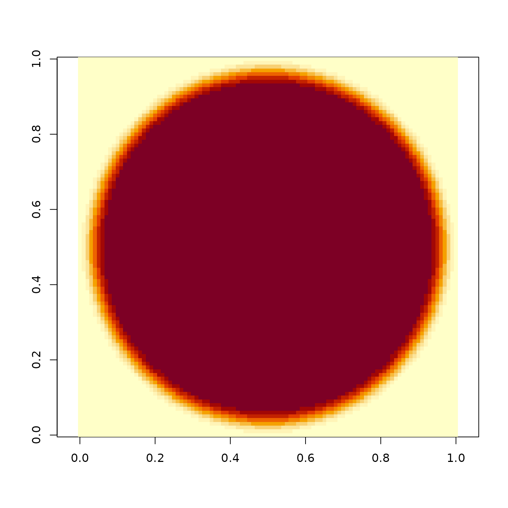

Generates a 2D disk with a gradual falloff.
Disk generated using the following formula:
(-22.35 * cos(1.68 * r2) + 85.91 * sin(1.68 * r2) ) * exp(-4.89 * r2) + (35.91 * cos(4.99 * r2) - 28.87 * sin(4.99 * r2)) * exp(-4.71 * r2) + (-13.21 * cos(8.24 * r2) - 1.57 * sin(8.24 * r2)) * exp(-4.05 * r2) + (0.50 * cos(11.90 * r2) + 1.81 * sin(11.90 * r2)) * exp(-2.92 * r2) + (0.13 * cos(16.11 * r2) - 0.01 * sin(16.11 * r2)) * exp(-1.51 * r2)
The origin of the coordinate system is the center of the matrix.
generate_2d_disk(dim = 11)
| dim | Default |
|---|
